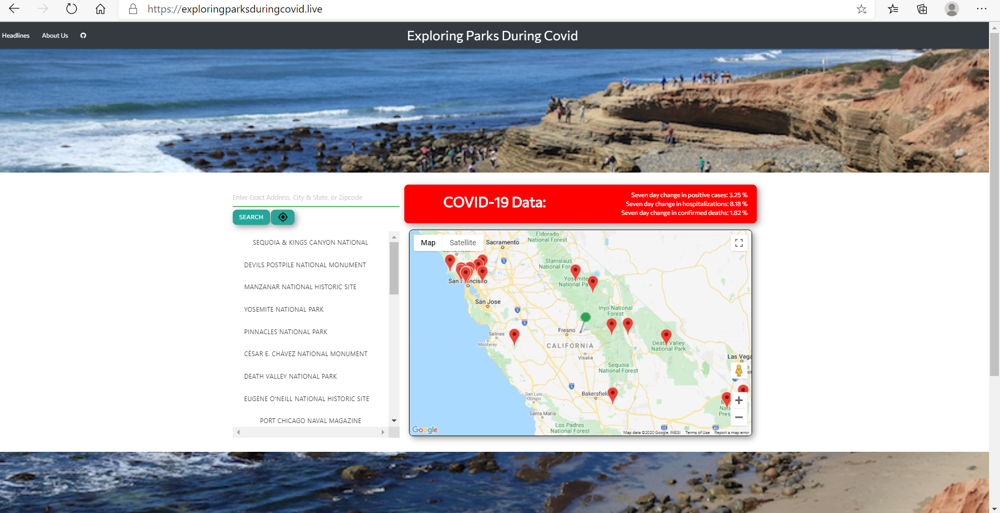
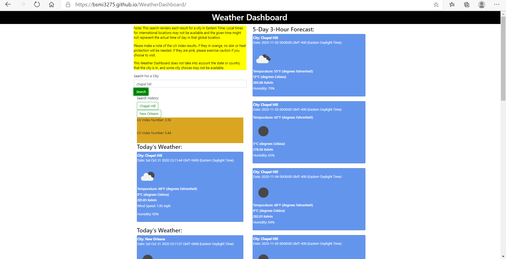
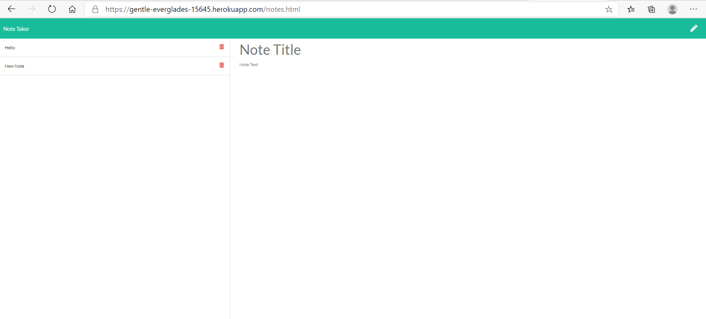
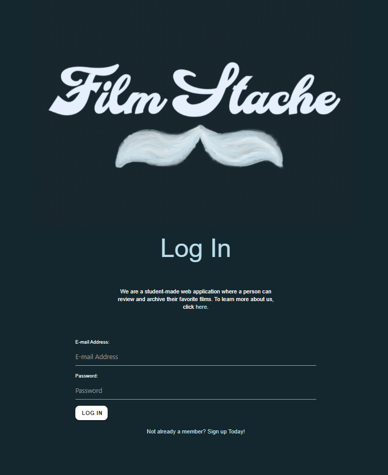
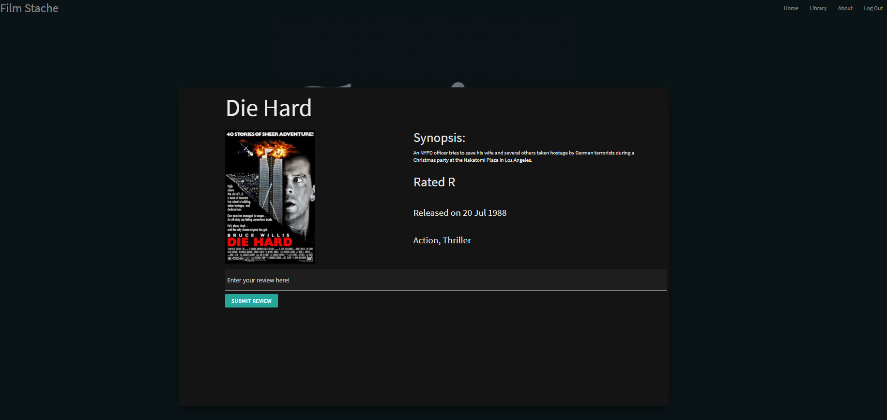

Starter Portfolio
My Business links:
GitHub pages link: https://github.com/Bsmi3275
LinkedIn profile link: https://www.linkedin.com/in/benjamin-smith-0384b31b5/
Downloadable Resume: Downloadable Resume
I know I have put a little more on this page now (New Year's Eve, 2020) than I had before. Nevertheless, I am moving forward and making progress.
Here are some some of my favorite projects and homework assignments which I have had the pleasure of working on.
**Project instructions or information can be viewed on ReadMe shown in GitHub Repository for respective assignments.
Project 1 ("Camping During COVID", which I completed alongside my colleagues Alex, Thomas, and Reed.)
Project #1 link
GitHub Repository

Weather Dashboard Homework
Link to deployed page
GitHub Repository

Note Taking (Express Javascript) Application Assignment
Link to deployed page (via Heroku)
GitHub Repository

Project 2 ("FilmStache", which I completed with Alex, Georgette, Gabriel, Patrick, and Ella.)
Project #2 link
GitHub Repository

